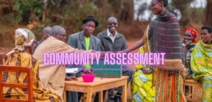

Expanded Nursing Uganda Explanation
Community Approach should be understood beyond a short definition. Link the concept to patient history, focused assessment, common risks, nursing priorities, documentation and evaluation of outcomes.
01 **TECHNIQUES USED TO ESTABLISH COMMUNITY HEALTH ACTIVITIES**
Below are the steps taken to establish community health activity.
- ∙ Community approach
- ∙ Community entry
- ∙ Community Assessment
- ∙ Community situation analysis (Diagnosis)
- ∙ Community mobilization
- ∙ Community participation
- ∙ Community organization
- ∙ Community empowerment
- ∙ Community based rehabilitative services for disabled and disadvantaged groups
02 Community Approach
Community approach refers to a comprehensive and participatory approach to addressing health issues and promoting well-being within a specific community or geographic area.
It emphasizes the active involvement and engagement of community members in identifying, prioritizing, and solving health challenges.
A community approach involves recognizing the unique characteristics, cultural beliefs, and social dynamics of a particular community. It seeks to understand the community’s needs, resources, and strengths, and collaboratively develop and implement interventions that are appropriate and sustainable. This approach recognizes that communities are not passive recipients of healthcare services but active partners in their own health promotion.
03 Elements of Community Approach
- Community participation and ownership : The community is actively engaged and empowered to take ownership of their health. This includes involving community members in decision-making processes, mobilizing community resources, and fostering a sense of collective responsibility for health outcomes.
- Needs Assessment : Conducting a thorough needs assessment is an integral part of the community approach. This involves gathering information about the community’s health challenges, existing health infrastructure, socio-economic factors, cultural beliefs, and practices. It helps identify priority health issues and tailor interventions to the specific needs of the community.
- Community Mobilization, Health Education and Awareness: Community mobilization activities are carried out to raise awareness and engage community members. This may include community meetings, workshops, door-to-door campaigns, and the use of various communication channels to disseminate health-related information. The aim is to educate community members about health issues, prevention strategies, and available services.
- Capacity Building and Training: Building the capacity of community members, including community health workers and volunteers, is crucial for effective implementation of the community approach. Training programs are conducted to equip them with the necessary knowledge, skills, and resources to deliver health services, health promotion activities, and community mobilization efforts. Training may cover areas such as health education, disease prevention, first aid, data collection, and management.
- Integration with existing systems : The community approach strives to integrate community-based health services with the existing formal healthcare system. This coordination ensures seamless referral mechanisms, effective collaboration with health facilities and professionals, and alignment with national health policies and guidelines.
- Collaboration and partnerships : Successful community-based health programs in Uganda often involve partnerships and collaborations between community organizations, non-governmental organizations (NGOs), government agencies, and other stakeholders. These partnerships help leverage resources, expertise, and support for sustainable implementation and scaling up of interventions.
- Monitoring and evaluation : Regular monitoring and evaluation are essential components of the community approach. They enable the assessment of program effectiveness, identification of challenges, and adjustment of strategies as needed. Monitoring and evaluation also facilitate accountability and learning within the community and among program implementers.
04 What is involved in Community Approach?
1. Site identification and location of the community: – These activities can be considered as part of the needs assessment stage in the community approach. They involve identifying the specific site or area where the community is located and understanding its geographical area.
2. Request community members: – This step aligns with community participation and engagement. Requesting community members’ involvement indicates the intention to actively engage them in the community approach, seeking their input, and involving them in decision-making processes.
3. Get data from other sources : – Gathering data from other sources helps in understanding the community’s health challenges, existing infrastructure, and socio-cultural factors that influence health. This activity is related to the needs assessment element of the community approach.
4. Site Investigations : – Accessibility to health facilities : This aligns with the goal of assessing the community’s existing health infrastructure and understanding the availability and proximity of health facilities, which is important for planning interventions. – Community interest : Evaluating the community’s interest and receptiveness towards health programs is an important part of community mobilization and engagement. – Availability of health facilities: Assessing the availability and functionality of health facilities relates to the needs assessment and resource mapping components of the community approach.
5. Other Resources: LCS, clan leaders, chiefs, community residents: – These mentioned resources represent key stakeholders in the community who play a significant role in the community approach: – LCS (Local Council Systems): They are local government structures that can provide support and collaboration in implementing community-based health programs. – Clan leaders and chiefs : These community leaders are important influencers who can facilitate community mobilization, engagement, and collaboration with health initiatives. – Community residents : Community members’ active participation and involvement are crucial for the success of the community approach, as they are the primary beneficiaries and contributors to their own health outcomes.
05 How to Carry Out Community Approach
1. Go through their gatekeepers : – Engage with gatekeepers to gain access to the community and seek their support and collaboration. Gatekeepers may include community leaders, local authorities, respected individuals, or community-based organizations.
2. Understand the culture and norms of the community: – Take the time to learn about the community’s culture, traditions, values, and social norms. This understanding helps build trust, respect, and effective communication with community members. It enables you to adapt interventions to align with community practices and preferences.
3. Assess the needs of the community : – Conduct a comprehensive assessment of the community’s health needs, challenges, and assets. Engage community members through surveys, interviews, focus groups, and observations to gather information. This assessment provides a foundation for planning interventions that are responsive to the community’s specific needs.
4. Prioritize the community needs with them : – Collaborate with community members to prioritize the identified needs. Engage in dialogue and discussions to understand their perspectives, values, and priorities. Together, determine which needs are most critical and align with the community’s goals and resources.
5. Plan with them : – Facilitate a participation-planning process that involves community members at every stage. Engage them in setting goals, defining strategies, and developing action plans. Encourage their active participation, ownership, and leadership in the planning process.
6. Implement with them: – Work together with community members to implement the planned interventions. Assign roles and responsibilities, and involve community members in the execution of activities. Ensure that the implementation aligns with the community’s cultural setting, resources, and capacities.
7. Evaluate with them : – Conduct evaluations in collaboration with community members to assess the impact and effectiveness of the interventions. Use participatory evaluation methods, such as surveys, focus groups, and community feedback sessions. Involve community members in data collection, analysis, and interpretation. This process promotes transparency, accountability, and shared learning.
06 Reasons for Community Approach
1. Ownership, Sustainability, and Community Engagement : The community approach promotes community ownership and involvement in health initiatives. When community members actively participate in decision-making, planning, and implementation, they feel a sense of ownership and responsibility for the success of the interventions. This leads to increased sustainability as the community is more likely to continue and maintain the initiatives even after external support diminishes.
2. Maintenance of Equipment and Infrastructure : By engaging community members in the upkeep and maintenance of health facilities, equipment, and resources, the longevity and functionality of these assets are improved. Community members take pride in their health facilities, ensuring they are well-maintained and available for use when needed.
3. Accessibility : The community approach focuses on improving access to healthcare services. By bringing healthcare services closer to the community, barriers such as distance, transportation costs, and lack of infrastructure are reduced. This results in increased accessibility to healthcare, particularly for marginalized and underserved populations who may face significant challenges in accessing formal healthcare facilities.
4. Support in Terms of Resources : The community approach taps into the resources available within the community. This can include community members’ skills, knowledge, traditional practices, and local resources. By leveraging these community resources, the community approach reduces dependence on external resources and fosters self-reliance. It also ensures that interventions are culturally relevant, aligned with local practices, and utilize resources that are readily available within the community.
5. Local Knowledge and Expertise : Communities possess valuable knowledge about their specific health challenges, local setting, and traditional practices. The community approach acknowledges and values this local knowledge, involving community members as experts in their own health. By incorporating local knowledge and expertise, interventions can be more effective, culturally appropriate, and responsive to the unique needs of the community.
6. Trust and Relationship Building: Implementing the community approach helps build trust and relationships between community members and healthcare providers or organizations. Working directly with the community and involving community members in decision-making builds trust, credibility, and mutual understanding. This strengthens the relationship between healthcare providers and the community, leading to improved collaboration and better health outcomes.
07 Challenges in Community Approach
1. High Expectations : Community members may have high expectations regarding the outcomes and impact of community-based interventions. Managing these expectations and ensuring realistic goals can be a challenge, especially when resources and capacity are limited.
2. Difference in Priorities : Community members may have distinct priorities, and their perspectives on what constitutes a priority, may vary. Balancing and addressing different priorities within the community can be challenging, requiring careful negotiation and consensus-building processes.
3. Communication Barriers : Effective communication is crucial for the success of the community approach. However, communication barriers such as language differences, cultural variations, or limited literacy levels can hinder effective information sharing, understanding, and engagement with community members.
4. Wrong Perceptions : Misconceptions or wrong perceptions about the purpose, goals, or benefits of community-based interventions can exist within the community. Overcoming these misconceptions and fostering accurate understanding can be challenging, requiring targeted communication and education efforts.
5. Lack of Community Participation : Limited community participation or engagement in the planning and implementation of interventions can hinder the success of the community approach. Encouraging and sustaining community involvement requires continuous efforts to build trust, address barriers, and promote active participation.
6. Lack of Political Commitment and Support : Political commitment and support at various levels are crucial for the success of community-based approaches. However, a lack of political will, limited allocation of resources, or inconsistent support can undermine the implementation and sustainability of interventions.
7. Negative Attitudes : Negative attitudes or resistance from community members, key stakeholders, or even healthcare providers can pose challenges. These attitudes may be due to cultural beliefs, fear of change, mistrust, or previous negative experiences. Addressing and changing negative attitudes requires targeted communication, education, and relationship-building efforts.
08 Nurses Roles in Community Approach
1. Health Promotion and Education : Nurses are involved in health promotion activities to educate and empower individuals and communities to make informed decisions about their health. They provide health education on various topics such as preventive measures, healthy lifestyles, disease management, and the importance of regular screenings.
2. Disease Prevention and Management : Nurses actively participate in community-level disease prevention efforts. They conduct screenings, immunizations, and health assessments to identify and manage health conditions. They also collaborate with other healthcare professionals to develop and implement disease prevention strategies, such as awareness campaigns and community-wide interventions.
3. Community Assessment and Needs Identification: Nurses contribute to community assessments by gathering data, identifying health needs and priorities, and determining the resources and assets available within the community. They use this information to design and implement tailored interventions that address the specific health challenges of the community.
4. Community Engagement and Collaboration : Nurses build relationships and collaborate with community members, community organizations, and key stakeholders to facilitate community engagement. They actively involve community members in the planning, implementation, and evaluation of healthcare initiatives, ensuring that interventions are culturally appropriate, relevant, and accepted by the community.
5. Care Coordination and Case Management : Nurses play a crucial role in coordinating care and providing case management services to individuals within the community. They assess individual health needs, develop care plans, and collaborate with other healthcare providers, social workers, and community resources to ensure continuity and comprehensive care.
6. Advocacy and Empowerment : Nurses advocate for the health and well-being of individuals and communities. They address health differences, social determinants of health, and systemic issues that impact community health. They empower individuals to become active participants in their own healthcare decisions, promoting self-care and self-advocacy.
7. Health System Navigation : Nurses assist community members in navigating the healthcare system, providing guidance on accessing healthcare service, and available resources. They act as a bridge between the community and healthcare facilities, ensuring that individuals receive appropriate and timely care.
8. Data Collection and Evaluation: Nurses contribute to data collection and evaluation efforts within the community approach. They collect and analyze health data, monitor health outcomes, and assess the effectiveness of interventions. This information guides decision-making, helps identify areas for improvement, and supports evidence-based practice.
09 Nursing Uganda Clinical Lens
Use Community Approach as a practical nursing topic, not only a memorized definition. Move from individual illness to prevention, population risk, health education and continuity of care.
- What to understand first: define community approach, identify the normal or expected pattern, then explain what changes when the patient is unwell.
- Why it matters in care: the nurse must recognize risk early, explain findings clearly, document accurately and know when to escalate.
- How to revise it: connect each point to assessment, nursing diagnosis or care problem, intervention, rationale and evaluation.
10 Assessment Guide
- Who is affected, where they live, risk factors, resources and barriers to care.
- Environmental hygiene, nutrition, immunization, water, sanitation and health-seeking behaviour.
- Community beliefs, leaders, household practices and surveillance data.
11 Nursing Priorities, Rationales and Outcomes
- Promote prevention, early detection, referral and community participation.
- Use clear health education matched to literacy, culture and available resources.
- Document findings and coordinate with community health structures.
The rationale for these priorities is patient safety: nursing actions should prevent deterioration, reduce discomfort, support recovery and create clear evidence for the next caregiver.
- Expected outcome: The community understands the message, risk is reduced and follow-up or referral pathways are active.
12 Patient Teaching and Revision Check
- Explain community approach in simple language the patient or caregiver can repeat back.
- Teach warning signs, medicine or follow-up instructions, hygiene or lifestyle points where relevant.
- For exams, prepare a short answer using: definition, causes or risk factors, signs, assessment, management, complications and prevention.
- For ward practice, document baseline findings, actions taken, patient response and the plan for review.
Illustrations and Diagrams (2)


Related Video Lectures
Watch nursing lecture videos on YouTube for this topic. Opens in a new tab.
Watch on YouTubeExternal link: YouTube may use its own cookies and terms. Nursing Uganda is not affiliated with YouTube.